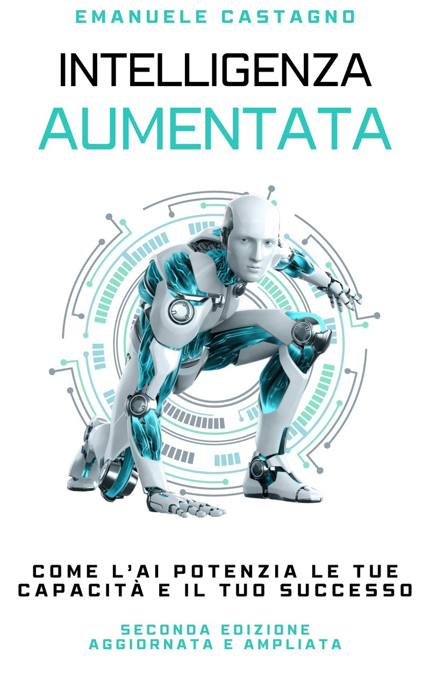
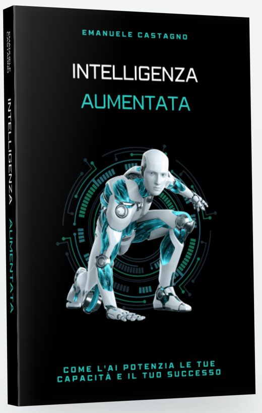

Prova subito: la tecnica FeynmanIA-32, capitolo 6
IntelligenzaAumentata
Come l'AI potenzia le tue capacità e il tuo successo
Seconda edizione, aggiornata e ampliata
Un manuale pratico, scritto da un manager che usa l'AI ogni giorno: prompt pronti all'uso, casi aziendali reali e gli strumenti del 2026. Con quattro capitoli nuovi su vibe coding, Physical AI, fiducia nell'AI e ciò che ci rende umani.

L'AI non sostituisce la competenza. La amplifica.
È l'idea che tiene insieme il libro. Non teoria: il metodo che uso ogni giorno con l'AI, dalla prima email del mattino ai progetti più complessi, pronto da applicare al tuo lavoro.
Cosa c'è dentro
Dodici capitoli, dall'uso quotidiano dell'AI agli agenti, ai robot e alle regole. I quattro capitoli segnati sono nuovi in questa edizione.

Stesso libro, quindici mesi dopo
La prima edizione l'ho scritta insieme a cinque sistemi di AI. Per la seconda l'AI ha fatto molto di più che aiutarmi a scrivere.
| Prima edizione | Seconda edizione | |
|---|---|---|
| Correzione e tipografia | L'AI mi aiutava poco a trovare gli errori e a sistemare la tipografia. | Più modelli di frontiera, usati insieme, hanno trovato gli errori e gestito l'impaginazione in Word. |
| Ebook Kindle e Apple | Quasi 400 pagine sistemate a mano, una per una. | Centinaia di prove di impaginazione automatiche, fatte dai miei agenti AI. |
| Audiolibro | Non c'era: troppo complesso e troppo costoso. | In italiano e in inglese, letto da una voce AI. |
Scegli come leggerlo
Cartaceo, ebook o audiolibro, in italiano e in inglese. Usa il selettore in alto per passare all'altra lingua.
Ascoltalo
Per la prima volta il libro è anche un audiolibro, in italiano e in inglese, di circa otto ore e mezza. Lo legge una voce sintetica, e su ogni piattaforma è indicato.
L'estratto dura 75 secondi e viene dal capitolo 9.
0:00 / 1:15
Un capitolo in regalo
Per il lancio regalo un capitolo intero. Lo scelgono con un sondaggio le persone che mi seguono su LinkedIn, e qui lo scarichi in PDF.
41 prompt pronti all'uso
Tutti i prompt del libro, da cercare e copiare, con esempi di risultato. Nel libro c'è il QR code che porta alla libreria.